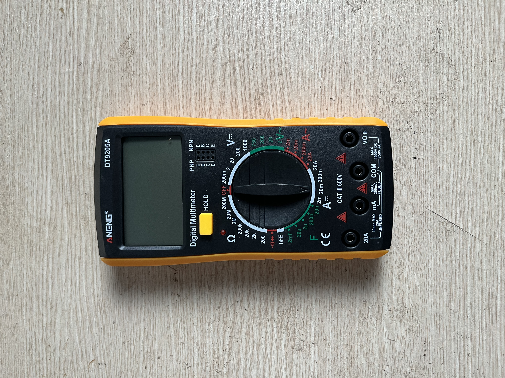

P2 LED + điện trở
Cắm LED rời trên breadboard, blink bằng GPIO, rồi thay lần lượt 220Ω / 330Ω / 1K để so độ sáng.
An toàn
LED luôn phải có điện trở nối tiếp. GPIO ESP32 chỉ là 3.3V logic — không cấp 5V/VIN thẳng vào chân GPIO để điều khiển LED (chỉ HIGH/LOW ~3.3V qua code).
Ảnh linh kiện



Nối dây gợi ý
| Từ | Tới | Dây | Ghi chú |
|---|---|---|---|
| D2 (GPIO 2) | Đầu điện trở | Jumper Đực–Cái | Output từ firmware |
| Điện trở | Chân dài LED (+) | — | Nối tiếp trên breadboard |
| Chân ngắn LED (−) | GND | Jumper Đực–Cái | Mass chung ESP32 |
D2 (GPIO 2) --[jumper]--> resistor --> LED anode (+)
LED cathode (-) --[jumper]--> GNDĐiện trở đặt trước hoặc sau LED đều được — miễn là nối tiếp trong vòng D2 → … → GND.
Các bước làm
- Giữ
LED_PIN = 2trongsrc/main.cpp(tiếp P1). - Cắm mạch LED + điện trở 220Ω; nối 2 jumper D2 và GND như bảng trên.
- Upload:
pio run -t upload— LED ngoài và LED onboard nháy 1s/1s. - Rút USB, thay 330Ω rồi 1K; ghi nhận độ sáng tương đối.
- Ghi chú vào
docs/projects.md(GPIO, điện trở đã thử).
Hoàn thành khi
- LED ngoài blink ổn định qua GPIO (không nối thẳng 3V3).
- Đã so 220Ω / 330Ω / 1K và giải thích: điện trở lớn hơn → dòng nhỏ hơn → LED mờ hơn.